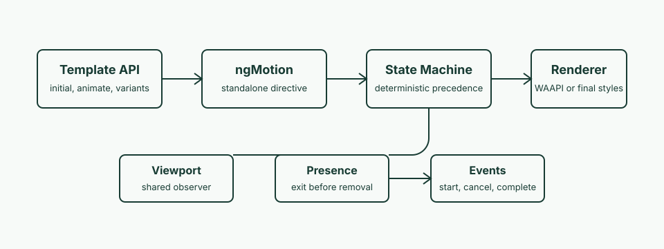

Angular Motion Docs
Build enter, interaction, viewport, stagger, presence, keyframe,
and imperative animations with standalone Angular APIs.
npm run typecheck
npm test
npm run security:audit:prod

Install Providers
Configure Angular Motion once at application bootstrap, then import
standalone directives into the components that need animation.
import { ApplicationConfig } from '@angular/core';
import { provideAngularMotion } from '@angular-motion/motion';
import { angularMotionPresets } from '@angular-motion/presets';
export const appConfig: ApplicationConfig = {
providers: [
provideAngularMotion({
presets: angularMotionPresets,
reducedMotion: 'user'
})
]
};
Standalone Component Usage
Modern Angular components declare directive dependencies in their
own imports array. No feature NgModule is required.
import { Component } from '@angular/core';
import { NgMotionDirective } from '@angular-motion/motion';
@Component({
standalone: true,
imports: [NgMotionDirective],
selector: 'docs-example',
template: `
<div
ngMotion
[initial]="{ opacity: 0, y: 32 }"
[animate]="{ opacity: 1, y: 0 }"
[transition]="{ duration: 0.35, ease: 'out' }">
Angular-native motion
</div>
`
})
export class DocsExampleComponent {}
API Patterns
Interaction States
<button
ngMotion
[animate]="{ scale: 1 }"
[whileHover]="{ scale: 1.04 }"
[whileTap]="{ scale: 0.96 }"
[whileFocus]="{ boxShadow: '0 0 0 4px #93c5fd' }">
Save
</button>
hover
tap
focus
Variants
readonly variants = {
hidden: { opacity: 0, y: 20 },
visible: {
target: { opacity: 1, y: 0 },
transition: { duration: 0.32, ease: 'out' }
}
};<article
ngMotion
initial="hidden"
animate="visible"
[variants]="variants">
</article>
Keyframes
<div
ngMotion
[animate]="{
scale: [1, 1.2, 0.95, 1],
opacity: [0, 1]
}"
[transition]="{
duration: 1,
ease: ['out', 'linear', 'in'],
times: [0, 0.4, 0.75, 1]
}">
</div>
Lifecycle Events
<div
ngMotion
[animate]="target"
(motionStart)="onStart($event)"
(motionComplete)="onComplete($event)"
(motionCancel)="onCancel($event)">
</div>
Orchestration
Stagger
<div ngMotionGroup [stagger]="0.08">
@for (item of items(); track item) {
<span
ngMotion
[initial]="{ opacity: 0, y: 12 }"
[animate]="{ opacity: 1, y: 0 }">
{{ item }}
</span>
}
</div>Presence
<ng-motion-presence [present]="open()">
<ng-template>
<section
ngMotion
[initial]="{ opacity: 0, scale: 0.95 }"
[animate]="{ opacity: 1, scale: 1 }"
[exit]="{ opacity: 0, scale: 0.95 }">
Panel
</section>
</ng-template>
</ng-motion-presence>Imperative Controls
readonly controls = motionControls();
run(): void {
this.controls.start({ opacity: 1, x: 80 }, { duration: 0.3 });
}
reset(): void {
this.controls.set({ opacity: 0.6, x: 0 });
}
Security
Angular Motion does not load remote code, evaluate strings as
JavaScript, require browser secrets, or make network requests from
animation primitives.
Treat motion targets as developer-owned configuration. Do not pass
raw user input into animation targets, variants, presets, or
imperative controls.
npm run security:audit:prod
Modern Angular
This codebase uses standalone components/directives, functional
dependency injection with inject(), signals for local
reactive state in examples, and control-flow blocks such as
@for. These are current Angular patterns that reduce
NgModule ceremony and make dependencies visible next to the code
that uses them.